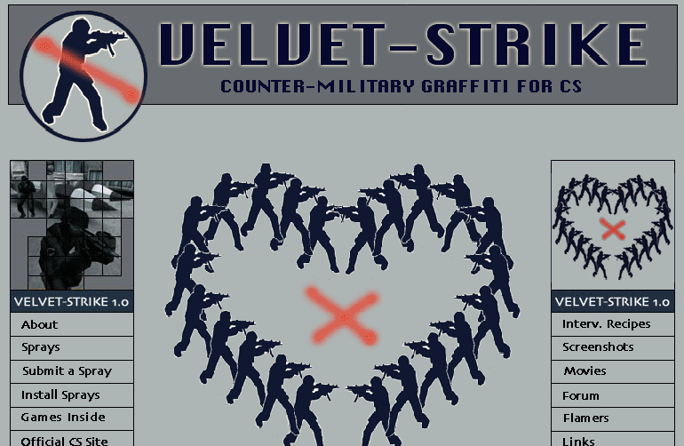
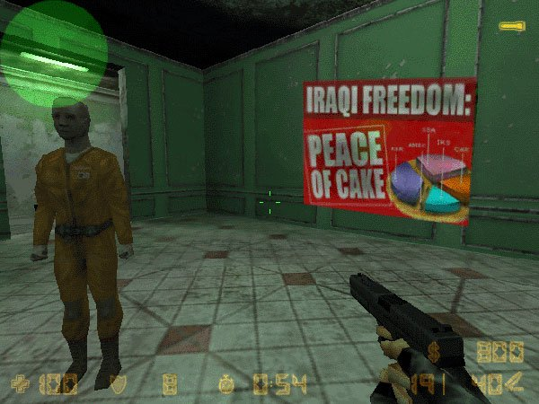

Velvet Strike
“IT WAS CLEAR, TO US ANYWAY, THAT THESE [VIDEO GAMES] WERE PROPAGANDA SPACES. THESE WERE SPACES WERE RIGHT WING IDEOLOGY WAS LIVING AN EXTREME. THE NONSTOP DESTRUCTION OF THE OTHER IN AN ARENA THAT NEVER QUITS.” —BRODY CONDON
Rather than program a full-blown game modification, Schleiner, Leandre, and Condon used the game’s existing graffiti function to create Velvet-Strike. Counter-Strike allowed users to upload custom-designed graffiti designs to spray throught the game’s maps. Velvet-Strike simply uploaded anti-war, anti-military sprays and made them available to players. They also encouraged players to create their own sprays to be made available on the Velvet-Strike website. The Velvet-Strikers performed their modifications live during game-play. They placed their sprays throughout the game’s maps and got killed constantly for doing so.
“I WAS EXCITED AT THAT TIME WITH THE POSSIBILITY OF PUBLIC SPACE BEING EXTENDED INTO THE VIRTUAL AND USING GAME SPACE AS A PLACE TO GET A PUBLIC MESSAGE OUT.” - ANNE-MARIE SCHLEINER
Velvet-Strike’s tags were not just explicit anti-military protests. The visuals ranged from an image of two soldiers kissing to pictures of pink teddy bears, calling to mind the women and children affected by real world military conflict.
Read Mariam Naziripour’s essay on the politics Velvet-Strike.
The project was met with hostility from the gaming world. Many reactions from players were angry and misogynist. They particularly resented what they percieved as a woman’s intervention in the game, and accused Schleiner, Leandre, and Condon of a naïvety around gaming. For instance, one email read: “if you don’t realize that videogame is just a VIDEOGAME, an that its a fake world, well then, GO PLAY WITH YOUR BARBIE!”In actuality, Velvet-Strike consciously attempted to complicate “the real” and the suppositions of the gaming world as an unreal space, particularly when it came to war and terrorism. Counter-Strike presented a kill-the-bad-guys version of war, and Velvet-Strike reintroduced the complexity, horror, and human element of armed conflict into its narrative.
In contrast to how Counter-Strike players took it, Velvet-Strike, was well-received in contemporary art contexts. Documentation of the project was exhibited in the Whitney Biennial in 2004, and the project has toured exhibition spaces internationally.
Anne-Marie Schleiner is engaged in gaming and net culture in a variety of roles as a writer, critic, curator, and gaming artist/designer. Her work investigates avatar gender construction, computer gaming culture, hacker art and experimental game design. She has curated online exhibits of game mods and add-ons including the exhibits Cracking the Maze: Game Patches and Plug-ins as Hacker Art, Mutation.fem, and Snow Blossom House. She has designed the games Anime Noir and Heaven711. She runs a site focused on game hacks and open source digital art forms called opensorcery.net and has been actively involved in the anti-war game performance art initiatives Velvet-Strike and OUT. She has taught at universities and artist workshops and participated in art residencies in Germany, Belgium, Spain and Mexico. She has exhibited online and at the New Museum, NY, the Whitney, Centro de la Imagen Museum, Mexico City, and international galleries, museums and festivals. She is currently an Assistant Professor of Fine Art at the University of Colorado at Boulder and also lives in Mexico City.
Brody Condon addresses the identity of fantasy in contemporary culture, poaching computer and live action role playing (LARP) games and using their principles to stage performative situations. Condon has participated in the Rotterdam Film Festival, the 2004 Whitney Biennial, Performa 09, and Greater New York at MoMA PS 1 in 2010. He has exhibited at the Yerba Buena Center for the Arts, San Francisco, The Kitchen, New York, Stedelijk Museum, Amsterdam, Kunstwerke, Berlin, LACMA, California, among others. Institutions including Museum of Modern Art, New York, New Museum, New York, the Hammer Museum, Los Angeles, and Santa Barbara Museum of Art, California, to name a few, have hosted his performances.
Joan Leandre is a media artist and a member of the Unknown Frame Observatory and the OVNI Archives. He has been involved in numerous projects such as the OVNI Scanner in Barcelona, the MAP Series Mega Assemble Project and the Oigo Rom Project at the Institut Universitari del Audiovisual, Barcelona. In 1999, he initiated retroyou.org, a project of manual web reading and soft digesting: retroYou r / c [radio / control series] started as a project of hard deconstruction of a racing game for PC, presented among other places in: OnedotZero, Barcelona; dina digital is not analog, Bologna; Arco 001, Madrid and Transmediale 02.media artist and activist. He has carried out such diverse actions as the manipulation of innocuous car race videogame computer code; compilations of documentation on technological euforia, both commercial and military; or the challenge to a powerful computer to create a model of the highest ever mountain. Leandre goes deep into the inviolable code of all types of image software, from simple videogames to flight simulators and even sofisticated military war games. He transforms their functionalities and converts the most banal use of popular technology into a visionary experience, a mission into the unknown, or a fun-filled journey without gravity.
https://anthology.rhizome.org/velvet-strike